Cargando Dashboard...
Conectando con servidores
Error de conexión.
No se pudo cargar el archivo de datos históricos.
Monitor económico
Fuentes: BCRA, BLS, FRED y Ámbito Financiero

1 año
3 años
5 años
10 años
Máx.
Desde:
Hasta:
Reset
Sector Bancario
Macroeconomía
Política Monetaria
Generador
Variables:
1
2
Línea de Tiempo
Gráfico de Correlación (X vs Y)
Variable 1 (Eje Y)
Métrica:
Gráfico:
Línea
Área Pintada
Barras
Nominalidad:
Precios Corrientes (Nominales)
Precios Constantes (Reales)
Variable 2 (Eje X en Correlación)
Métrica:
Gráfico:
Línea
Área Pintada
Barras
Nominalidad:
Precios Corrientes (Nominales)
Precios Constantes (Reales)
Eje Secundario
Dibujar Análisis
Resultado Analítico